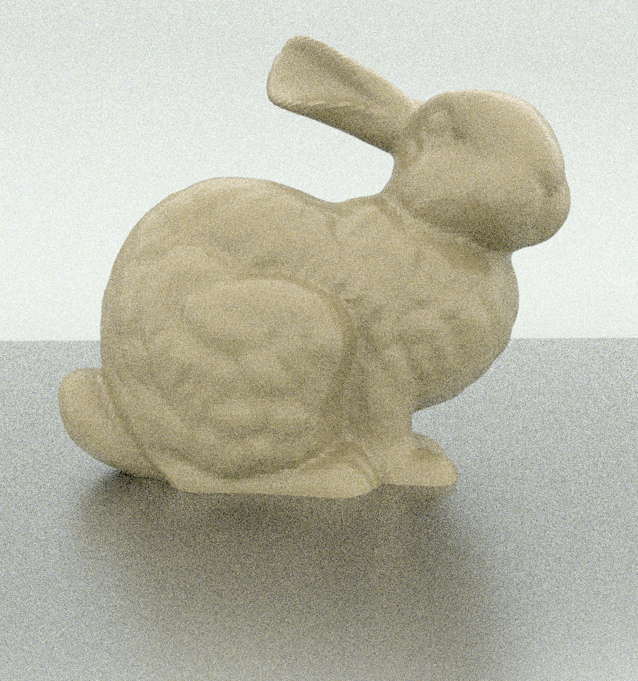
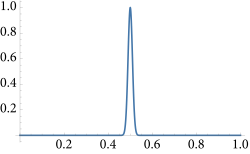
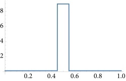
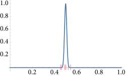

2.2 提高效率（Improving Efficiency）
鉴于这是一个无偏的蒙特卡罗估计量，我们有幸能够在采样数量与方差（导致的误差）之间建立可靠的关系。如果我们有一幅不可接受的噪声渲染图像，增加样本数量将以可预测的方式减少误差，并且——在计算量足够的情况下——可以生成足够质量的图像。
然而，计算需要时间，而时间往往不够。电影的截止日期可能即将到来，或者实时渲染器中的六十分之一秒时间片可能即将结束。鉴于样本数量的限制，减少方差的唯一选择是寻找方法以获取更多可用的样本。幸运的是，已经开发出多种技术，通过充分利用所采样本来改进基本的蒙特卡罗估计量；在这里，我们将讨论在 pbrt 中使用的最重要的技术。
2.2.1 分层抽样（Stratified Sampling）
一种经典且有效的方差减少技术系列基于样本的精确放置，以更好地捕捉被积函数的特征（更准确地说，是尽可能少地错过重要特征）。这些技术在 pbrt 中被广泛使用。分层抽样将积分域分解为多个区域，并在每个区域中放置样本；在这里，我们将从方差缩减的特性方面分析该方法。稍后，在第 8.2.1 节中，我们将回到基于傅里叶分析的工具，以提供关于它的进一步见解。
分层抽样将积分域 \( \Lambda \) 细分为 \( n \) 个不重叠的区域 \( \Lambda_1,\Lambda_2,...,\Lambda_n \) 。每个区域称为一个 层（stratum），它们必须完全覆盖原始域：
\[ \bigcup_{i=1}^{n} \Lambda_i = \Lambda \]
为了从 \( \Lambda \) 中抽取样本，我们将根据每个层内部的密度 \( p_i \) ，从每个 \( \Lambda_i \) 中抽取 \( n_i \) 个样本。一个简单的例子是对一个像素进行超采样。使用分层抽样，像素周围的区域被划分为一个 \( k \times k \) 的网格，并在每个网格单元内均匀抽取一个样本。这比抽取 \( k^2 \) 个随机样本要好，因为样本位置不太可能聚集在一起。在这里，我们将展示为什么这种技术可以减少方差。
只有一个层 \( \Lambda_i \) 的蒙特卡罗估计是
\[ F_i = \frac{1}{n_i} \sum_{j=1}^{n_i} \frac{f(X_{i,j})}{p_i(X_{i,j})} \]
其中 \( X_{i,j} \) 是从密度 \( p_i \) 中抽取的第 \( j \) 个样本。总体估计为 \( F = \sum_{i} v_i F_i \) ，其中 \( v_i \) 是层 \( i \) 的分布体积（fractional volume） ( \( v_i \in (0,1] \) )。
在层 \( i \) 中被积函数的真实值是
\[
\mu_i = E[f(X_{i,j})] = \frac{1}{v_i} \int_{\Lambda_i} f(x) \text{d}x
\]
该层的方差是
\[ \sigma_{i}^2 = \frac{1}{v_i} \int_{\Lambda_i} (f(x) - \mu_i)^2 \text{d}x \]
因此，在该层中有 \( n_i \) 个样本时，每层估计量的方差为 \( \sigma_i^2 / n_i \) 。这表明总体估计量的方差为
\[ \begin{align} V[F] &= V \left[ \sum v_i F_i \right] \\ &= \sum V [v_i F_i] \\ &= \sum v_i^2 V [F_i] \\ &= \sum \frac{v_i^2 \sigma_i^2}{n_i} \end{align} \]
如果我们合理地假设样本数量 \( n_i \) 与体积 \( v_i \) 成正比，那么我们有 \( n_i = v_i n \) ，总体估计量的方差为
\[
V[F_n] = \frac{1}{n} \sum v_i \sigma_i^2
\]
为了将此结果与未分层的方差进行比较，我们注意到选择一个未分层样本等同于根据由体积 \( v_i \) 定义的离散概率分布选择一个随机层 \( I \) ，然后在 \( \Lambda_I \) 中选择一个随机样本 \( X \) 。从这个意义上说， \( X \) 是在 \( I \) 的 条件（conditionally） 下选择的，因此可以使用条件概率证明
\[ V[F] = \frac{1}{n} \left[ \sum v_i \sigma_i^2 + \sum v_i (\mu_i - Q)^2 \right] \]
其中 \( Q \) 是整个定义域 \( \Lambda \) 上 \( f \) 的均值。†（有关这个结果的推导，请参见Veach（1997）。）
关于方程（2.12），有两点需要注意。首先，我们知道右侧的和一定是非负的，因为方差总是非负的。其次，它表明分层抽样永远不会增加方差。分层总是减少方差，除非右侧的和恰好为 0。只有当函数 \( f \) 在每个层 \( \Lambda_i \) 上具有相同的均值时，它才可能为 0。为了使分层抽样效果最佳，我们希望最大化右侧的和，因此最好使各层的均值尽可能不均等。这解释了为什么如果对函数 \( f \) 一无所知，紧凑的（compact） 层是理想的。如果层的范围很广，它们将包含更多的变异性，并且 \( \mu_i \) 将更接近真实均值 \( Q \) 。
图 2.1 显示了在渲染包含光泽反射的图像时，使用分层抽样与独立随机分布进行抽样的效果对比。方差有合理的降低，而运行时间几乎没有增加。
（a）独立
（b）分层
图 2.1： 当使用（a）独立随机采样时，方差更高且图像噪声更多，而当使用（b）分层样本方向分布时则情况较好。（兔子模型由斯坦福计算机图形实验室提供。）（(Bunny model courtesy of the Stanford Computer Graphics Laboratory.)）
分层抽样的主要缺点是它与标准数值积分一样，遭受“维数灾难（curse of dimensionality）”。在 \( D \) 维中进行完全分层，每个维度有 \( S \) 层，需要 \( S^D \) 个样本，这很快就变得不可承受。幸运的是，通常可以独立地对某些维度进行分层，然后随机关联来自不同维度的样本；这种方法将在第 8.5 节中使用。选择分层的维度时，应以分层那些在对被积函数值的影响上往往具有较高相关性的维度为准。（Owen 1998）。
2.2.2 重要性采样（Importance Sampling）
重要性采样是一种强大的方差减少技术，它利用了蒙特卡罗估计量的事实
\[
F_n = \frac{1}{n} \sum_{i=1}^{n} \frac{f(X_i)}{p(X_i)}
\]
如果样本来自与被积函数 \( f(x) \) 相似的分布 \( p(x) \) ，则收敛速度更快。在这种情况下，当被积函数的大小相对较大时，样本更有可能被采样。重要性采样是渲染中最常用的方差减少技术之一，因为它易于应用，并且在使用良好的采样分布时非常有效。
要了解为什么这样的抽样分布可以减少误差，首先考虑使用分布 \( p(x) \propto f(x) \) 或 \( p(x) = cf(x) \) 的效果。†（我们通常假设 \( f(x) \geq 0 \)；如果 \( f(x) \) 为负值，我们可能会设置 \( p(x) \propto |f(x)| \)。有关更多讨论，请参见“延伸阅读”部分。）证明概率密度函数 PDF 的归一化的要求是微不足道的
\[
c = \frac{1}{\int f(x) \text{d}x}
\]
找到这样的 PDF 需要我们知道积分的值，而这正是我们最初试图估计的内容。尽管如此，如果我们 能够（could） 从这个分布中进行采样，估计量中每一项的值将会是
\[ \frac{f(X_i)}{p(X_i)} = \frac{1}{c} = \int f(x) \text{d}x \]
估计量的方差为零！当然，这听起来荒谬，因为如果我们可以直接对 \( f \) 进行积分，就不需要使用蒙特卡罗方法。然而，如果能找到一个形状与 \( f(x) \) 相似的密度 \( p(x) \) ，方差就会减少。
作为一个更现实的例子，考虑高斯函数 \( f(x) = e^{-1000(x-1/2)^2} \) ，其在图 2.2(a)中绘制，范围为 \( [0,1] \) 。在大部分定义域内，其值接近于零。样本 \( X \) 在 \( X < 0.2 \) 或 \( X > 0.3 \) 时在估计积分值帮助不大，因为它们无法提供关于函数值在 \( 1/4 \) 附近的峰值大小的信息。使用均匀采样和基本的蒙特卡罗估计器时，方差大约为 \( 0.0365 \) 。
如果样本是从分段常数分布（piecewise-constant distribution）中抽取的
\[ p(x) = \begin {cases} 0.1 &\ x \in [0,0.45) \\ 9.1 &\ x \in [0.45,0.55) \\ 0.1 &\ x \in [0.55,1) \end {cases} \]
如图 2.2(b)所示，如果使用方程(2.7)中的估计量，则方差减少了大约 \( 6.7 \) 倍。图 2.2(c)显示了该分布中 6 个代表性点的集合；我们可以看到， \( f(x) \) 的大多数评估位于有趣的区域，在该区域中它的值并非接近于零。
图 2.2： （a）一个在 \( [0,1] \) 大部分范围内接近零的窄高斯函数。如果使用方程（2.6）的基本蒙特卡罗估计器来积分这个函数，由于大多数样本的值接近零，因此方差相对较高。（b）一个大致近似该函数分布的概率密度函数（PDF）。如果使用这个 PDF 生成样本，方差会显著降低。（c）根据（b）生成的样本的代表性分布（representative distribution）。
然而，重要性采样如果使用不当的分布可能会增加方差。考虑使用下面这种分布
\[ p(x) = \begin {cases} 1.2 &\ x \in [0,0.4) \\ 0.2 &\ x \in [0.4,0.6) \\ 1.2 &\ x \in [0.6,1) \end {cases} \]
来估计高斯函数的积分。该 PDF 增加了在函数值接近零的地方采样的概率，并减少了在其幅度较大时采样的概率。
这个概率密度函数不仅在被积函数较大时生成的样本更少，而且当它生成时，由于在该区域 \( p(x)=0.4 \)，蒙特卡洛估计器中的 \( f(x)/p(x) \) 值会特别高。结果是方差大约比均匀采样高 \( 5.4 \) 倍，并且比上述更好的概率密度函数高近 \( 36 \) 倍。在渲染的蒙特卡罗积分背景下，评估被积函数通常涉及追踪光线的开销，因此希望最小化采样数量；使用劣质采样分布并通过评估更多样本来弥补这一点并不是一个令人满意的选择。
2.2.3 多重重要性采样（Multiple Importance Sampling）
我们经常会遇到两个或多个函数相乘的积分：\( \int f_a(x)f_b(x) \text{d}x \) 。通常可以为各个因子(factors)单独推导出重要性采样策略，但无法推导出与它们的乘积相类似的策略。这种情况在涉及光传输相关的积分中尤其常见，例如在光传输方程（1.1）中 BSDF、入射辐射和余弦因子的乘积。
要理解将蒙特卡罗方法应用于此类乘积所面临的挑战，暂时假设我们有两个采样分布 \( p_a \) 和 \( p_b \) ，它们与 \( f_a \) 和 \( f_b \) 的分布完全匹配。（在实际情况中，这通常不会成立。）使用方程（2.7）的蒙特卡罗估计量，我们有两个选择：我们可以使用 \( p_a \) 进行抽样，这样得到的估计量为
\[
\frac{f(X)}{p_a(X)} = \frac{f_a(X)f_b(X)}{p_a(X)} = cf_b(X)
\]
其中 \( c \) 是一个常数，等于 \( f_a \) 的积分，因为 \( p_a(x) \propto f_a(x) \) 。该估计量的方差与 \( f_b \) 的方差成正比，而 \( f_b \) 的方差可能本身就很高。†（请注意，方程 (2.8) 中方差的定义并不排除计算函数自身的方差。） 相反，我们可能会从 \( p_b \) 中抽样，尽管这样做会给我们一个方差与 \( f_a \) 的方差成正比的估计量，而 \( f_a \) 的方差同样可能很高。在更常见的情况下，抽样分布仅大致匹配其中一个因子，情况通常会更糟。
遗憾的是，从每个分布中取一些样本，然后对两个估计量取平均，这种显而易见的解决方案并没有好多少。由于方差是可加的，一旦方差渗入一个估计量，我们无法通过将其与另一个低方差估计量相加来消除它。
多重重要性采样（MIS）正是针对这个问题，提供了一种易于实现的方差减少技术。基本思想是，在估计积分时，我们应该从多个采样分布中抽取样本，选择这些分布的目的是希望至少有一个能够合理地匹配被积函数的形状，即使我们不知道具体是哪一个。MIS 随后提供了一种方法来加权每种技术的样本，从而消除由于被积函数值与采样密度之间的不匹配而导致的大方差峰值。甚至鼓励使用仅考虑不寻常特殊情况的专门采样程序，因为在这些情况发生时，它们能够减少方差，而一般来说成本相对较低。
有两个采样分布 \( p_a \) 和 \( p_b \) ，从每个分布中各取一个样本 \( X \sim p_a \) 和 \( Y \sim p_b \) ，MIS 蒙特卡罗估计量为
\[
w_a(X) \frac{f(X)}{p_a(X)} + w_b(Y) \frac{f(Y)}{p_b(Y)}
\]
其中 \( w_a \) 和 \( w_b \) 是加权函数，选择它们的来使得该估计量的期望值等于 \( f(x) \) 的积分值。
更一般地说，给定 \( n \) 个采样分布 \( p_i \) ，从第 \( i \) 个分布中抽取 \( n_i \) 个样本 \( X_{i,j} \) ，MIS 蒙特卡罗估计量为
\[
F_n = \sum_{i=1}^{n} \frac{1}{n_i} \sum_{j=1}^{n_i} w_i(X_{i,j}) \frac{f(X_{i,j})}{p_i(X_{i,j})}
\]
（估计量无偏的加权函数的完整条件是，当 \( f(x) \neq 0 \) 、 \( \sum_{i=1}^{n} w_i(x) = 1 \) 时，它们的和为 1，并且如果 \( p_i(x) = 0 \) ，则 \( w_i(x) = 0 \) 。）
设置 \( w_i(X) = 1/n \) 对应于对各种估计量求和的情况，我们已经看到这是一种降低方差的无效方法。如果加权函数在相应的采样技术与被积函数匹配良好时相对较大，而在不匹配时相对较小，这样可以减少高方差样本的贡献，将会更好。
在实践中，权重函数的一个良好选择是 平衡启发式（balance heuristic） 方法，它试图通过考虑样本生成的所有不同方式来实现这一目标，而不仅仅是用于生成样本的特定方式。对于第 \( i \) 种采样技术的平衡启发式权重函数是
\[
w_i(x) = \frac{n_i p_i (x)}{\sum_{j} n_j p_j(x)}
\]
通过平衡启发式和我们从两种抽样技术中各取一个样本的样本，方程（2.13）的估计量计算结果为
\[
\frac{f(X)}{p_a(X) + p_b(X)} + \frac{f(Y)}{p_a(Y) + p_b(Y)}
\]
每次对 \( f \) 的评估都要除以对应样本的所有概率密度函数（PDF）的总和，而不仅仅是生成样本的那个。因此，如果 \( p_a \) 在 \( p_b \) 具有更高概率的点生成了一个低概率的样本，那么除以 \( p_a(X) + p_b(X) \) 会减少该样本的贡献。实际上，这样的样本在从 \( p_a \) 中抽样时被降低权重，因为与 \( p_b \) 相关的抽样技术在积分域的相应点上更为有效。只要其中一种抽样技术在抽样函数值较大的点上具有合理的概率，MIS 权重就能显著降低方差。
BalanceHeuristic() 计算了方程 (2.14) 在两个分布 \( p_a \) 和 \( p_b \) 的特定情况下的结果。我们在 pbrt 中不需要更一般的多分布情况。
/** 采样内联函数（Sampling Inline Functions） */
Float BalanceHeuristic(int nf, Float fPdf, int ng, Float gPdf) {
return (nf * fPdf) / (nf * fPdf + ng * gPdf);
}
在实践中，幂启发式（power heuristic） 通常会进一步减少方差。对于指数（exponent） \( \beta \) ，幂启发式是
\[ w_i(x) = \frac{(n_i p_i (x))^{\beta}}{\sum_{j} (n_j p_j (x))^{\beta}} \]
注意，幂启发式与平衡启发式具有相似的形式，但它进一步减少了相对低概率的贡献。我们的实现中硬编码了 \( \beta = 2 \) ；该参数值在实践中通常效果良好。
/** 采样内联函数（Sampling Inline Functions） */
Float PowerHeuristic(int nf, Float fPdf, int ng, Float gPdf) {
Float f = nf * fPdf, g = ng * gPdf;
return Sqr(f) / (Sqr(f) + Sqr(g));
}
多重重要性采样即使在不从所有分布中抽样的情况下也可以应用。这种方法被称为 单样本模型（single sample model） 。我们在这里不包括推导，但可以证明，给定一个被积函数 \( f(x) \) ，如果从一组抽样技术中以概率 \( q_i \) 选择了一种抽样技术 \( p_i \) ，并从 \( p_i \) 中抽取了一个样本 \( X \) ，那么 单样本估计量（single sample estimator）
\[
\frac{w_i(X)}{q_i} \frac{f(X)}{p_i(X)}
\]
提供了积分的无偏估计。对于单样本模型，平衡启发式是可证明的最优（provably optimal）。
多重重要性采样的一个缺点是，如果其中一种采样技术与被积函数非常匹配，MIS 可能会略微增加方差。对于渲染程序，MIS 几乎总是值得的，因为它在可能具有高方差的情况下提供了方差减少。
多重重要性采样补偿（MIS Compensation）
多重重要性采样通常使用各自有效的概率分布来对被积函数进行重要性采样，确保在被积函数非零的任何地方都有非零的生成样本概率。然而，当使用多重重要性采样时，并不要求所有概率密度函数在函数值非零的地方都为非零；只需其中一个为非零即可。
这一观察促使了一种称为 MIS 补偿（MIS compensation） 的技术的发展，该技术可以进一步减少方差。其动机在于，如果所有的采样分布都将一些概率分配给积分函数值较小的采样区域，那么通常情况下，该积分函数的该区域最终会被过度采样，而积分函数值较高的区域则会被采样不足。
MIS 补偿基于一个理念，即对一个或多个（但不是全部）概率分布进行锐化——例如，通过调整它们在之前低概率区域的概率为零。一个新的采样分布 \( p' \) 可以例如被定义为
\[
p'(x) = \frac{\max(0,p(x) - \delta)}{\int \max(0, p(x) - \delta) \text{d} x}
\]
对于某个固定值 \( \delta \) 。
这种技术在 表格化采样分布（tabularized sampling distributions） 的情况下特别容易应用。在第 12.5 节中，它被有效地用于采样环境地图光源。
2.2.4 俄罗斯轮盘赌（Russian Roulette）
俄罗斯轮盘赌是一种可以通过跳过对对最终结果贡献较小的样本的评估来提高蒙特卡罗估计效率的技术。在渲染中，我们通常有以下形式的估计器
\[
\frac{f(X)v(X)}{p(X)}
\]
在这里，积分被积函数由一些容易评估的因子 \( f(X) \) 组成（例如，与表面如何散射光线相关的因子），以及一些评估成本较高的因子，例如需要追踪光线的二元可见性因子（binary visibility factor） \( v(X) \) 。在这些情况下，评估估计量的大部分计算开销集中在 \( v \) 上。
如果 \( f(x) \) 为零，显然值得跳过评估 \( v(X) \) 的工作，因为它的值不会影响估计量的值。然而，如果我们也跳过评估 \( f(x) \) 小但非零的估计量，那么我们将引入估计量的偏差，并系统性地低估被积函数的值。俄罗斯轮盘赌解决了这个问题，使得在 \( f(x) \) 的值小但不一定为 0 时也可以跳过光线追踪，同时仍然能够平均计算出正确的值。
为了应用俄罗斯轮盘赌，我们选择一些终止概率 \( q \) 。这个值几乎可以以任何方式选择；例如，它可以基于对特定样本所选积分函数值的估计，随着积分函数值变小而增加。当概率为 \( q \) ，该估计量不会针对特定样本进行评估，而是使用某个常数值 \( c \) 代替（通常使用 \( c=0 \) ）。当概率为 \( 1-q \) ，估计量仍然会被评估，但会被加权因子 \( 1/(1-q) \) 加权，这有效地补偿了被跳过的样本。
我们有了新的估计器
\[ F' = \begin {cases} \frac{F-qc}{1-q} & \xi > q \\ c & otherwise \\ \end {cases} \]
很容易看出，它的期望值与原始估计量的期望值相同：
\[
E[F'] = (1-q) \left( \frac{E[F] - qc}{1 - q} \right) + qc = E[F]
\]
俄罗斯轮盘赌从不减少方差。事实上，除非以某种方式 \( c = F \) ，否则它总是会增加方差。然而，如果选择的概率使得那些可能对最终结果贡献较小的样本被跳过，它确实提高了蒙特卡罗效率。
2.2.5 分裂（Splitting）
俄罗斯轮盘赌减少了样本数量，而分裂则通过在多维积分的某些维度上增加样本数量，来提高效率。作为一个例子，考虑一个一般形式的积分
\[
\int_{A} \int_{B} f(x,y)\text{d}x \text{d}y
\]
使用标准重要性采样估计器，我们可能从独立分布 \( X_i \sim p_x \) 和 \( Y_i \sim p_y \) 中抽取 \( n \) 个样本，并计算
\[
\frac{1}{n} \sum_{i=1}^{n} \frac{f(x_i,Y_i)}{p_x(X_i)p_y(Y_i)}
\]
分裂使我们能够形式化在 \( A \) 中每个样本的 \( B \) 积分时取多个样本的想法。通过分裂，我们可能为每个样本 \( X_i \) 取 \( m \) 个样本 \( Y_{i,j} \) ，从而得到估计量
\[
\frac{1}{n} \sum_{i=1}^{n} \frac{1}{m} \sum_{j=1}^{m} \frac{f(X_i,Y_{i,j})}{p_x(X_i)p_y(Y_{i,j})}
\]
如果可以对每个 \( X_i \) 评估 \( f(X_{i,\cdot}) \) ，那么我们可以比使用方程（2.18）所取的 \( nm \) 个独立 \( X_i \) 值更有效地计算总共 \( nm \) 个样本。
在渲染的一个例子中，方程（2.17）形式的积分被用来计算图像中像素的颜色：在像素区域 \( A \) 上进行积分，在像素 \( x \) 中的每个点，向场景中追踪一条光线，并使用对追踪一条或多条光线的半球的积分（此处用 \( B \) 表示）计算交点处的反射辐射。通过分裂，我们可以为每个照明积分获取多个样本，通过摊销从相机追踪初始光线的成本来提高效率。